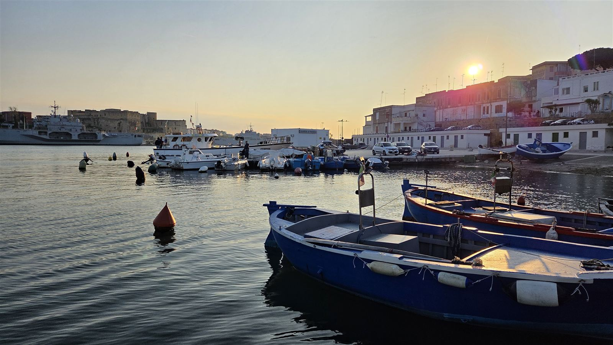
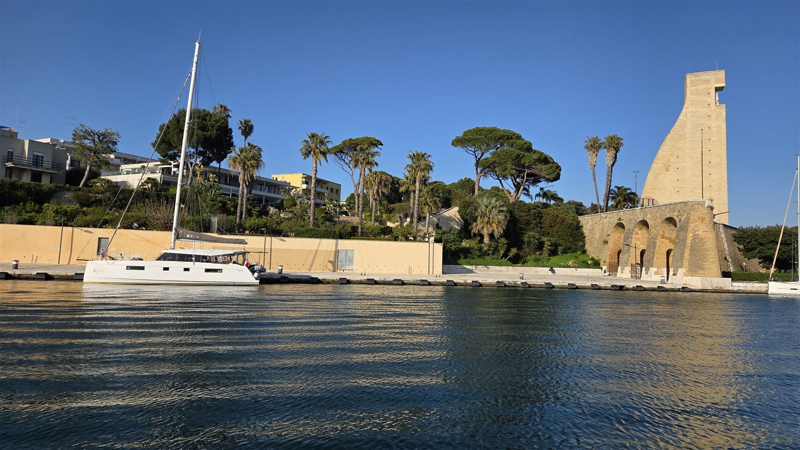
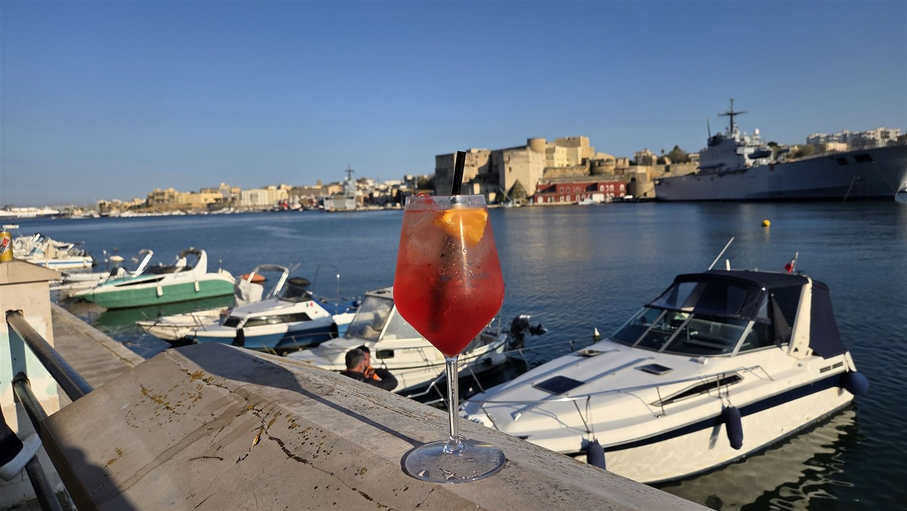
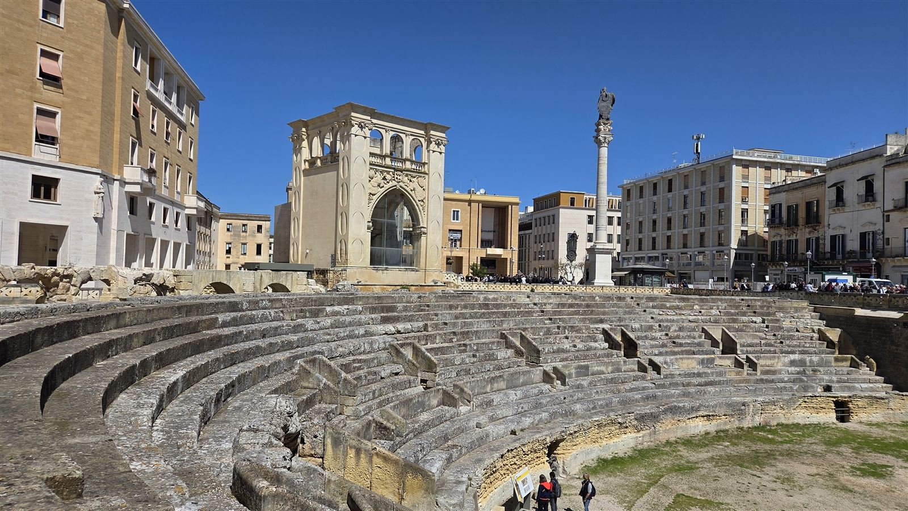
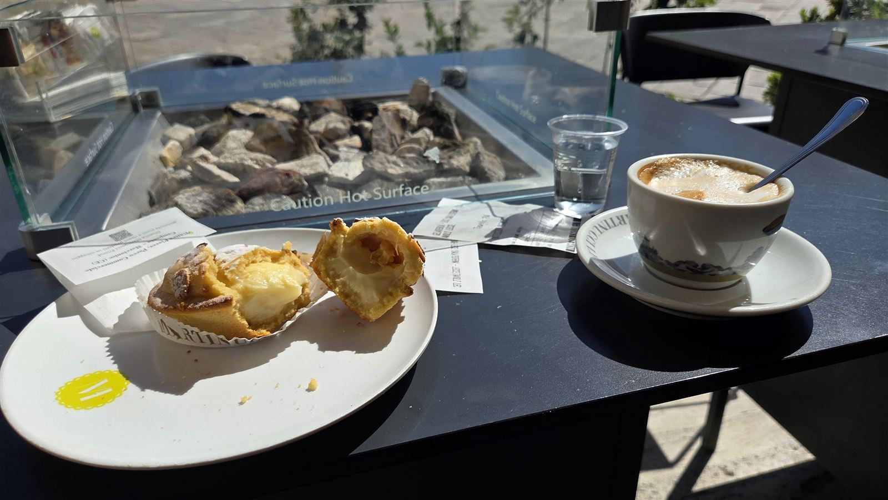
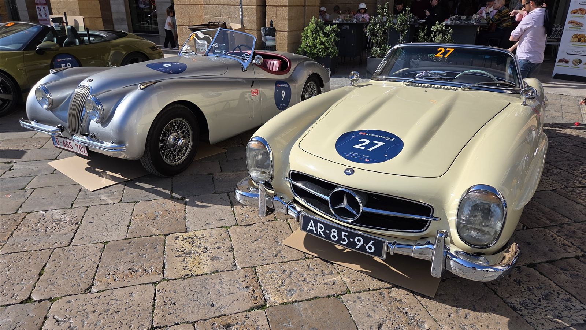
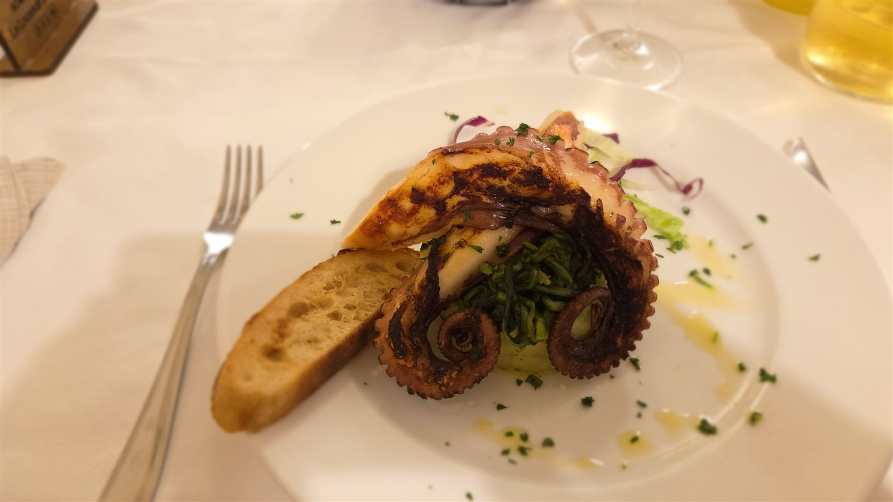

Z cest
Brindisi a Lecce: pět dní v Apulii díky stávce na letištích
Destinace a úvod
Do Brindisi jsem letěl sám, ve středu 8. dubna 2026. Původně jsem se měl vracet v pátek 10. dubna, jenže na ten den vyhlásili v Itálii celostátní stávku v letecké dopravě. Domů jsem nakonec letěl až v neděli 12. dubna. Z dvou nocí byly čtyři: dvě v Brindisi a dvě v Lecce.
Proč Brindisi? Ještě jsem tam nebyl, letenky byly levné a Itálii mám rád. Tak proč ne.
Brindisi se mi líbilo a přijde mi jako velmi dobrá destinace pro někoho, kdo letí poprvé sám, bez cestovky a bez dalšího zázemí. Letiště je malé, do města jezdí autobus a vlakem se dají dělat krásné výlety, určitě stojí za to zajet do Lecce. V dubnu tam navíc bylo minimum turistů: v centru Brindisi jsem potkával víceméně jen lidi, kteří se mnou letěli v letadle. V Lecce turistů bylo víc, ale pořád v pohodě, a byli to spíš Italové a školní výpravy.

Letenka
Letěl jsem Wizz Airem z Katowic do Brindisi a zpátky. Zpáteční letenka stála 280 zlotých (2026), tedy zhruba 1 600 Kč.
Stávka a zrušený let
O stávce jsem věděl dopředu. Wizz Air mi sám žádnou změnu letu nenabídl, tak jsem normálně odletěl s tím, že když let zruší, musí se o mě postarat. Předem jsem se podíval, kdy letí jeho další letadlo, takže jsem počítal s tím, že tam zůstanu o pár nocí déle.
Zprávu o zrušení letu jsem dostal v noci z 9. na 10. dubna, když jsem byl v Lecce. Na letiště jsem už vůbec nejel a rovnou jsem napsal Wizz Airu do chatu, co mám dělat. Nabídli mi let až za dva dny, v neděli 12. dubna. V chatu jsem si nechal písemně potvrdit, že mi proplatí hotel i jídlo, a odpověděli, že ano a že si mám schovat účtenky. Od té chvíle jsem si schovával každý účet.
Hned po návratu domů jsem poslal Wizz Airu žádost o proplacení nákladů. Za dva dny navíc to podle mě bylo klidně kolem 7 000 Kč (2026). Proplatili skoro všechno, chybělo možná kolem pěti stovek, nejspíš hamburger z McDonaldu. Napsali mi, že na vyřízení mají 30 dní, a peníze opravdu přišly přesně třicátý den. Za mě tedy dva dny navíc v Itálii zadarmo.
Doprava na letiště
Do Katowic jsem jel vlastním autem a parkoval jsem jako vždycky na parkovišti Rafax, asi 400 metrů od letiště.
V Brindisi jsem jezdil z letiště do města a zpátky autobusem. Bylo to levné.
Salonky
Katowice
V Katowicích jsem do salonku nemohl. Salonek pro schengenské lety zrušil přístup pro LoungeKey i Priority Pass. Druhý salonek, pro lety mimo Schengen, s kartami zatím funguje, jenže let do Brindisi je schengenský.
Brindisi
Na letišti v Brindisi je malý salonek. Byl jsem tam sám, pak přišla ještě jedna paní. Byly tam sendviče a vůbec nebyl špatný.
Ubytování
Brindisi: Ibis, první noc
První noc jsem spal v Ibisu v Brindisi, za 71 eur i se snídaní (2026). Dostal jsem pokoj myslím v nejvyšším patře s výhledem přes střechy na město, k tomu welcome drink. Snídaně normální, spíš sladká. Úplně v pohodě.
Hotel je ale dost daleko: do centra k moři je to pěšky asi půl hodiny.
Lecce: B&B Il Sedile
Druhou noc jsem spal v Lecce v B&B Il Sedile, rezervovaném přes Booking, za 950 Kč (2026). Pěkný pokoj s koupelnou a hlavně nádherný výhled na hlavní náměstí Piazza Sant'Oronzo, dole hned kavárna. Místo bylo fakt pecka a cena výborná.
Lecce: Mercure
Po zrušení letu jsem šel do Mercure v Lecce, který jsem měl předem vyhlédnutý. Stál 95 eur na noc se snídaní (2026), tedy skoro stejně jako Ibis, ale byl o tři třídy lepší. Fakt krásný hotel a dobrá snídaně.
Mohl jsem v něm zůstat obě noci navíc, ale odlet byl v neděli dopoledne a chtěl jsem mít jistotu, že ráno nebudu řešit cestu z Lecce do Brindisi a na letiště. Poslední noc jsem proto spal zase v Brindisi.
Brindisi: Ibis, poslední noc
Poslední noc jsem šel znovu do stejného Ibisu, tentokrát za 88 eur (2026). A bylo to hrozné. I přes zlatý status v ALL Accor jsem dostal pokoj snad ve druhém patře s výhledem na požární schodiště a pokoj byl špinavý. Jako úplně jiný hotel, a přitom jen jiný pokoj. Za stejnou cenu jsem v Lecce měl Mercure se snídaní. Tady už bych v životě nespal.
Místní doprava
Mezi Brindisi a Lecce jsem jezdil vlakem. Hodně pěkný a rychlý vlak, za chvilku jsem byl na místě.
V Brindisi jezdí přes vnitřní přístav loďka, něco jako MHD. Jezdí tam a zpátky asi každých 20 minut a stojí myslím kolem 2 eur (2026).
Program po dnech
Den 1 (st 8. 4.): přílet, Brindisi
Po příletu jsem se hned ubytoval v Ibisu. Pak jsem šel pěšky kolem nádraží do centra k moři. Prošel jsem hlavní památky: katedrálu Duomo di San Giovanni Battista, Piazza Santa Teresa a římské sloupy, které značí konec Via Appia, silnice vedoucí z Říma až sem. Odtud se ve starověku plulo přes Jadran do Řecka a dál na východ.
Pak jsem se svezl loďkou přes vnitřní přístav. Na druhé straně stojí Monumento al Marinaio d'Italia, pomník italským námořníkům. Dá se vyjít po schodech nahoru a je odtud pěkný výhled na staré Brindisi.
Podél břehu jsem došel do baru Vista Mare Petit Lounge Bar. Je odtud vidět pevnost a vojenské lodě, které kotví v zátoce. Příjemné posezení, docela živo a hodně mladých lidí.
Večer jsem měl rezervovanou restauraci La Locanda del Porto. Dal jsem si výbornou chobotnici a pistáciový cheesecake, taky moc dobrý. Zpátky do hotelu jsem šel pěšky přes nádherně osvětlené Brindisi, venku skoro nikdo.


Trasa dne v Mapách Google: https://www.google.com/maps/dir/Aeroporto+di+Brindisi/Duomo+di+Brindisi/Colonne+Romane+Brindisi/Monumento+al+Marinaio+d%27Italia/La+Locanda+del+Porto+Brindisi
Den 2 (čt 9. 4.): vlakem do Lecce
Po snídani v Ibisu jsem jel vlakem do Lecce. Z nádraží jsem došel pěšky na ubytování na Piazza Sant'Oronzo, nebylo to daleko.
Prošel jsem Piazza del Duomo a Piazza Sant'Oronzo, kde je přímo v centru římský amfiteátr zapuštěný pod úroveň ulice. Pěkné centrum, určitě se mi líbilo.
V Lecce je pobočka slavné neapolské pizzerie L'Antica Pizzeria da Michele, tak jsem si tam zašel. Pizza ale byla strašně drahá, kolem 15–16 eur (2026), přitom v Neapoli stojí zhruba polovinu. V kavárně pod ubytováním jsem si dal místní pasticciotto: vypadá suše, ale je úplně narvané krémem. Vynikající.
Večer jsem se ještě prošel centrem a k jídlu mi stačila šunka a sýry ze supermarketu. V noci přišla zpráva o zrušení letu.


Trasa dne v Mapách Google: https://www.google.com/maps/dir/Stazione+di+Brindisi/Stazione+di+Lecce/Piazza+Sant%27Oronzo+Lecce/Piazza+del+Duomo+Lecce
Den 3 (pá 10. 4.): Lecce navíc
Ráno jsem se přesunul do Mercure. Na oběd jsem šel do restaurace kousek od pizzerie da Michele. Zase výborné a zase jsem neodolal chobotnici.
Cestou z oběda jsem narazil na obrovský sraz veteránů, odhadem kolem stovky aut. Podle cedulek na autech šlo nejspíš o 1000 Miglia Experience Italy, která 9.–12. dubna 2026 projížděla Apulií a zastavovala i v Lecce. Byla tam Porsche, Ferrari, staré Jaguary a Mercedesy, některá strašně vzácná. Nádherná auta. Večer jsem šel do hotelu.

Trasa dne v Mapách Google: https://www.google.com/maps/dir/Mercure+Lecce/Piazza+Sant%27Oronzo+Lecce
Den 4 (so 11. 4.): zpátky do Brindisi
Po dobré snídani v Mercure jsem jel kolem poledne vlakem zpátky do Brindisi. Udělal jsem si víceméně stejný okruh jako první den: centrum, znovu loďka přes přístav, aperol. Do baru Vista Mare jsem se chtěl vrátit, ale nebylo kde si sednout, tak jsem se otočil.
Na večeři jsem šel znovu do La Locanda del Porto. Místo chobotnice jsem si dal steak, dobrý, ale chobotnice byla lepší. A zase pistáciový cheesecake. Spal jsem v Ibisu.
Trasa dne v Mapách Google: https://www.google.com/maps/dir/Stazione+di+Lecce/Stazione+di+Brindisi/Colonne+Romane+Brindisi/La+Locanda+del+Porto+Brindisi
Den 5 (ne 12. 4.): odlet
Ráno jsem jel autobusem na letiště, chvíli poseděl v salonku a odletěl do Katowic.
Kde jsem jedl

Brindisi: La Locanda del Porto. Byl jsem tam dvakrát, chobotnice výborná, steak dobrý, pistáciový cheesecake moc dobrý.
Lecce: L'Antica Pizzeria da Michele. Dobrá pizza, ale drahá, kolem 15–16 eur (2026).
Lecce: restaurace kousek od da Michele. Výborná chobotnice.
Lecce: pasticciotto v kavárně pod B&B Il Sedile na Piazza Sant'Oronzo.
Náklady
Útratu jsem si podrobně nevedl. Tohle jsou částky, které znám (vše 2026):
Zpáteční letenka Katowice–Brindisi, Wizz Air: 280 zlotých, zhruba 1 600 Kč.
Ibis Brindisi, první noc se snídaní: 71 eur.
B&B Il Sedile, Lecce, 1 noc: 950 Kč.
Mercure Lecce, 1 noc se snídaní: 95 eur.
Ibis Brindisi, poslední noc: 88 eur.
Pizza v da Michele: kolem 15–16 eur.
Loďka přes přístav v Brindisi: asi 2 eura.
Náklady na dvě noci navíc (Mercure, poslední noc v Ibisu a jídlo), podle mě kolem 7 000 Kč, mi Wizz Air proplatil skoro celé, bez zhruba pěti stovek. Jídlo, vlaky, autobus a parkování v Katowicích jsem jinak nesledoval.
Postřehy
Když víte o stávce dopředu a dopravce vám nic nenabídne, klidně leťte. Po zrušení letu jsem nejel na letiště, rovnou jsem psal do chatu Wizz Airu a proplacení hotelu a jídla jsem si nechal potvrdit písemně. Schovávejte všechny účtenky a žádost pošlete hned po návratu; peníze přišly přesně 30. den.
V Katowicích se do schengenského salonku s LoungeKey ani Priority Passem už nedostanete.
Brindisi je dobrá první samostatná cesta: malé letiště, autobus do města, vlak na výlety a v dubnu skoro žádní turisté.
Brindisi je večer krásně osvětlené a skoro prázdné.
Loďka přes vnitřní přístav v Brindisi je levná vyhlídková jízda a dovede vás k Monumento al Marinaio.
Co bych udělal jinak
Poslední noc bych do Ibisu v Brindisi už nešel. Za stejnou cenu jsem měl v Lecce Mercure se snídaní, o tři třídy lepší.
Jinak za mě super výlet a dva dny navíc zadarmo. Paráda.